COMPINT · curso 3
3. Análisis Sintáctico
3.1 Nociones Generales
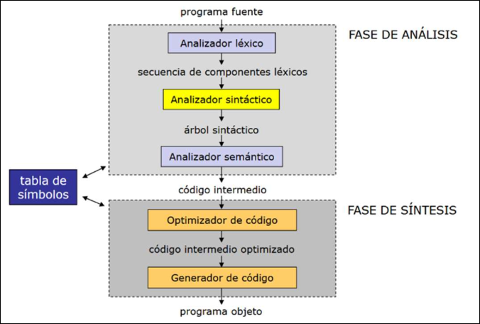
3.1.1 Gramáticas Independientes del Contexto
Una gramática independiente del contexto se define como una 4-tupla:
donde:
es el conjunto de símbolos terminales. es el conjunto de símbolos no terminales o variables sintácticas. es el símbolo inicial. es el conjunto de producciones, de la forma:
con
Observación: en algunos apuntes también se escribe
La máquina teórica asociada al reconocimiento de los lenguajes independientes del contexto es el autómata a pila.
En este tema se usa además el símbolo $ para indicar fin de cadena.
3.1.2 Tipos de Analizadores Sintácticos
Un analizador sintáctico analiza el código fuente como una secuencia de componentes léxicos (símbolos terminales) y construye una representación interna en forma de árbol sintáctico. Podemos hablas de dos tipos de analizadores:
- Descendentes: parten de la raíz del árbol, aplican las reglas de la gramática sustituyendo la parte izquierda de una regla por su parte derecha.
- Ascendentes: parten de las hojas, aplican las reglas de la gramática reduciendo la parte derecha de una regla por su parte izquierda.
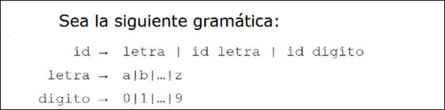
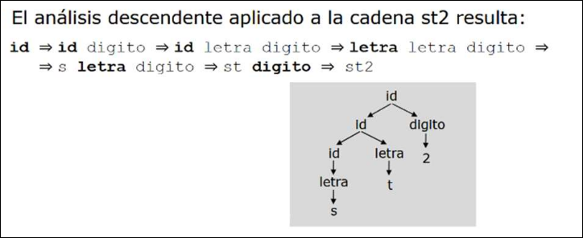
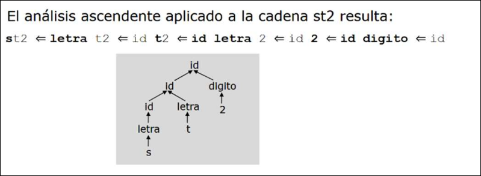
3.1.3 Forma de Backus-Naur Extendida
La BNF extendida es la notación más común para fomalizar gramáticas.
Notación Básica:
::=usada en definiciones.|usada para representar disyunción<>usada para representar símbolos NO TERMINALES.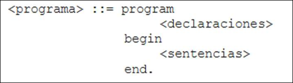
Notación Extendida:
[]usados para representar símbolos opcionales (pueden aparecer una vez o ninguna).{}usados para representar repetición cero, una o más veces."usados para distinguir metasímbolos de terminales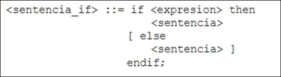
Notación Visual:
- Los símbolos terminales se marcan en negrita
- Se eliminan los símbolos
<>de los no terminales - Se utiliza el símbolo
->en vez de::=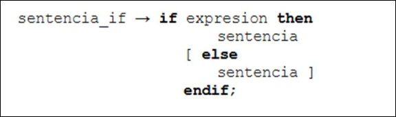
3.2 Diseño de una Gramática
Al desarrollar un nuevo lenguaje de programación, se debe diseñar una nueva gramática que describirá sus características. Algunos aspectos que deben ser discutidos en el diseño de una nueva gramática son:
- Recursividad: lo que permite reducir el número de reglas sintácticas
- Ambigüedad: ha de evitarse pues proporciona una gramática a menudo más intuitiva, pero permite generar distintos códigos objeto para el mismo código fuente.
- Asociatividad: se deben proporcionar reglas de asociatividad para las distintas expresiones del lenguaje
- Precedencia: determina el orden en el que se realizarán las distintas operaciones del lenguaje.
3.2.1 Recursividad
Los lenguajes de programación pueden generar infinitos programas, así que hay que usar un método de generación sin realizar una casuística interminable. La recursividad permite generar un número infinito de programas mediante una gramática finita.
Una gramática es recursiva si, partiendo de un
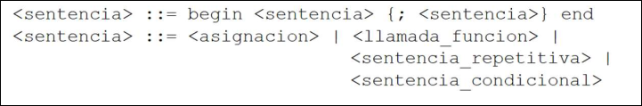
3.2.2 Ambigüedad
Una gramática es ambigua si genera al menos una cadena con dos o más árboles de derivación distintos. Se debe evitar la ambigüedad, ya que pudiendo utilizar distintos árboles sintácticos para genera una misma sentencia, el código generado podrá ser distinto en distintas ejecuciones del compilador.
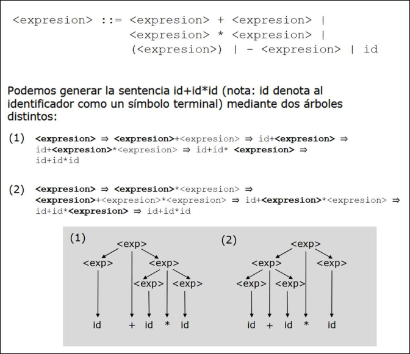
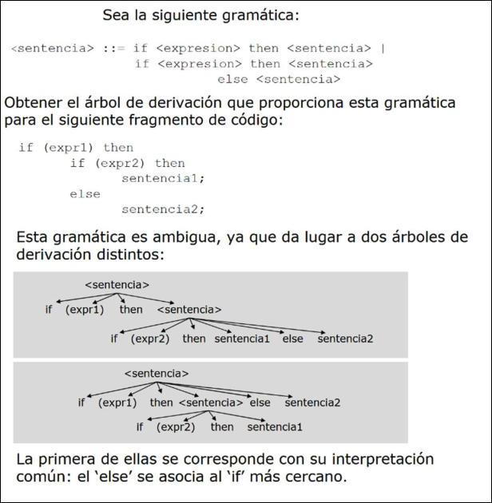
Factorización por la izquierda
Cuando en el diseño de una gramática aparecen dos producciones de un mismo No Terminal que empiezan igual, no se sabrá cuál de las reglas elegir.
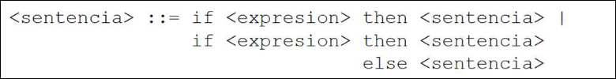
La factorización por la izquierda solucione esto reescribiendo dichas reglas para retrasar la decisión hasta haber visto suficiente. En general, si nuestra gramática tiene una producción de la forma
- Realizar la sustitución siguiente:
- Comprobar si
se pueden factorizar
A = un no terminal
α = prefijo común
β₁...βₙ = continuaciones distintas después del prefijo común
γ = otra alternativa que no empieza por α
A = <sentencia>
α = if <expresion> then <sentencia>
β₁ = ε
β₂ = else <sentencia>
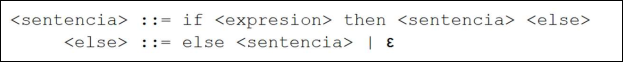
3.2.3 Asociatividad
Cuando diseñamos un lenguaje debemos decidir el tipo de asociatividad de las operaciones entre más de dos operandos.
- Asociatividad por la derecha: las operaciones se hacer de derecha a izquierda.
- Asociatividad por la izquierda: las operaciones se hacen de izquierda a derecha.
La asociatividad de puede incorporar a una gramática mediante la recursividad, distinguiendo entre:
- Operador asociativo por la derecha: una regla sintáctica en la que aparece el operador se hace recursiva por la derecha.
<asignacion> ::= id = <asignacion> |id - Operador asociativo por la izquierda: la regla sintáctica en la que aparece el operador se hace recursiva por la izquierda.
<expresion> ::= <expresion> + id | id
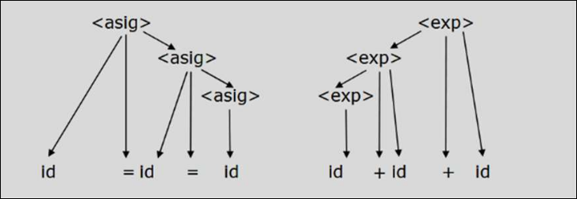
3.2.4 Precedencia
La precedencia permite especificar un orden relativo de evaluación de unos operadores respecto a otros. Se puede incorporar usando:
- Una variable sintáctica para cada nivel de precedencia
- Una producción para cada operador.
Un operador tendrá menos precedencia cuanto más cerca esté su regla de derivación de la regla inicial de la gramática. A mayor precedencia mayor prioridad de agrupación/evaluación.
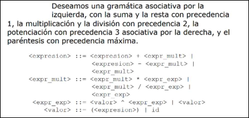
3.3 Análisis Sintáctico Descendente
El análisis sintáctico consiste en, una vez definida una gramática, comprobar que cada programa escrito en código fuente obedece sus reglas.
3.3.1 ASD Recursivo
El caso más simple de ASD (Análisis Sintáctico Descendente) es totalmente recursivo:
- Avanzamos: cuando sustituimos un no terminal por alguna de sus producciones
- Retrocedemos: cuando se llega a un punto muerto y es necesario probar otra regla de sustitución.
Para gestionar este proceso usamos una pila en la que almacenamos los símbolos de cada sustitución, tratando de emparejar el símbolo que hay en la cima de la pila con la entrada actual.
Si al final del proceso la pilay la entrada están vacías, entonces la sentencia pertenece al lenguaje.
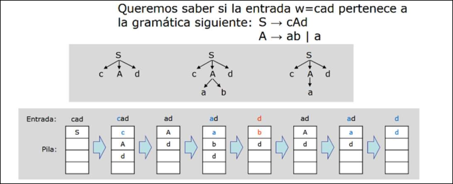
Una posible implementación del ASD se puede realizar desarrollando una función de análisis por cada no terminal.
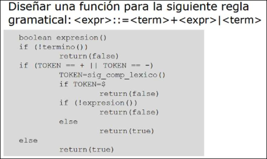
- Son muy lentos debido a los retrocesos
- No se sabe si la entrada pertenece o no al lenguaje hasta analizar todas las posibilidades. Si no pertenece o no al lenguaje hasta analizar todas las posibilidades. Si no pertenece, en la pila tenemos el símbolo
, por lo que no podemos decir dónde está el error. - Si se genera código objeto durante el análisis, en cada retroceso hay que eliminar parte del código generado.
- Estos inconvenientes hacen que estos métodos de ASD no sean recomendables.
Recursividad por la izquierda
Las reglas recursivas por la izquierda pueden hacer entrar al ASD en un bucle infinito. Por tanto, hay que eliminar la recursividad por la izquierda.
Sea una gramática recursiva:
Aα₁, Aα₂, ... = alternativas recursivas por la izquierda
β₁, β₂, ... = alternativas no recursivas
Por ejemplo
A → A + T | A - T | T
Dónde:
A = A
α₁ = + T
α₂ = - T
β₁ = T
Sigue siendo recursiva y es equivalente a la gramática anterior, pero la
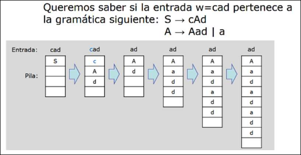
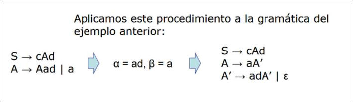
Este método elimina la recursividad inmediata (es decir, en la misma derivación). Si la recursividad aparece en derivaciones posteriores hay que encontrar el elemento conflictivo y sustituirlo por su definición.
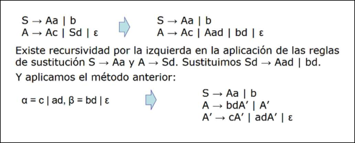
3.3.2 ASD Predictivo
Pretenden evitar los retrocesos prediciendo en cada momento cuál de las reglas se debe aplicar para continuar el análisis correctamente. Supongamos que la cadena de entrada es
Si cada regla de sustitución comienza por un componente léxico distinto el análisis nunca retrocederá, salvo error. Debemos aplicar la regla de sustitución que comienza por
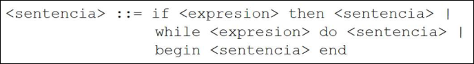
Gramáticas LL(k)
Las gramáticas que se proponen son las
(left): la entrada se lee de izquierda a derecha. (left): se sustituye el no terminal situado a la izquierda : se leen componentes léxicos por anticipado
Nos centramos en gramáticas
- No puede ser recursiva por la izquierda
- Dos reglas de sustitución de un mismo no terminal no pueden dar lugar al mismo componente léxico inicial.
- Estas condiciones son necesarias no suficientes
Si encontramos una gramática no
- Eliminando la recursividad por la izquierda
- Sacando factor común por la izquierda.
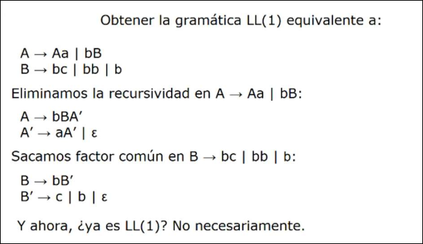
Conjuntos de Predicción
Definimos dos conjuntos de predicción, que ayudarán en el proceso de análisis predictivo: el conjunto de primeros y el conjunto de siguientes.
Conjunto Primeros
Sea
Para calcular
- Si
es un símbolo terminal , - Si (
añadimos a - Si
es un no terminal y es una regla de sustitución, añadimos a , si es un terminal, y para todo - Si
es un no terminal, y es una regla de sustitución, y añadimos a
Para calcular
- Añadimos todos los símbolos, distintos de
de - Si
está en , añadir también los símbolos distintos de de - Si
está en , añadir también los símbolos distintos de de y así sucesivamente. - Por último, añadir
a si contiene a ,
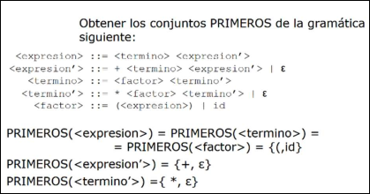
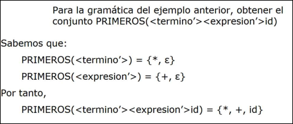
Traducción:
Los conjuntos PRIMEROS, o FIRST, sirven para responder esta pregunta: Si empiezo a derivar desde un símbolo o una secuencia de símbolos, ¿qué terminales pueden aparecer como primer token?
Por ejemplo, si tienes:
A → a B | b C
entonces:
PRIMEROS(A) = { a, b }
Si
PRIMEROS(id) = { id }
PRIMEROS(+) = { + }
PRIMEROS(*) = { * }
PRIMEROS(() = { ( }
Si
A → a B | b C | ε
entonces miras cómo puede empezar cada alternativa:
A → a B empieza por a
A → b C empieza por b
A → ε puede desaparecer
Por tanto:
PRIMEROS(A) = { a, b, ε }
Regla mental para calcular
Empieza por X1.
Añade sus PRIMEROS excepto ε.
Si X1 puede ser ε, mira X2.
Añade sus PRIMEROS excepto ε.
Si X2 puede ser ε, mira X3.
Y así sucesivamente.
Solo añades ε si todos pueden desaparecer.
Ejemplo:
PRIMEROS(A) = { a, ε }
PRIMEROS(B) = { b, ε }
PRIMEROS(C) = { c }
Entonces:
PRIMEROS(A B C) = { a, b, c }
Si por ejemplo quisiese:
PRIMEROS(A B)
Entonces:
PRIMEROS(A B) = { a, b, ε }
Conjunto Siguientes
Sea
Si
Para calcular
- Si
es , añadir a . - Si para cada regla
, añadir a - Para cada regla
, donde contiene a ( ), añadir todos los símbolos de a - Para cada regla
añadir a
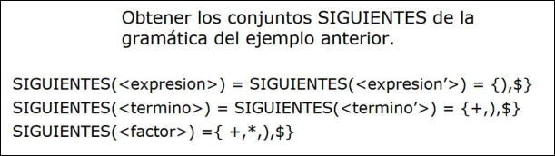
Traducción:
El conjunto SIGUIENTES(A), también llamado FOLLOW(A), contiene los terminales que pueden aparecer inmediatamente después del no terminal A en alguna derivación.
- Si
Ses el símbolo inicial:
$ ∈ SIGUIENTES(S)
- Si aparece una producción:
B → α A β
entonces se añade:
PRIMEROS(β) - { ε } a SIGUIENTES(A)
- Si en:
B → α A β
la parte β puede derivar en vacío, es decir:
β ⇒* ε
entonces se añade:
SIGUIENTES(B) a SIGUIENTES(A)
- Si
Aaparece al final de una producción:
B → α A
entonces se añade:
SIGUIENTES(B) a SIGUIENTES(A)
Tabla de Análisis Sintáctico
La tabla de análisis sintáctico LL(1) sirve para que un parser predictivo sepa qué regla aplicar sin probar ni retroceder. La idea es:
Estoy intentando expandir un no terminal A
y el siguiente token de la entrada es x.
¿Qué producción de A debo usar?
Mediante los conjuntos de predicción podemos construir una tabla que indique qué regla se debe aplicar dado el no terminal a expandir y el componente léxico actual. En esta tabla de filas son símbolos no terminales de la gramática, y sus columnas son los componentes léxicos junto al símbolo de fin de cadena
Una gramática es
Las celdas de la tabla
- Para cada terminal
, añadir en - Si
para cada terminal , añadir en .
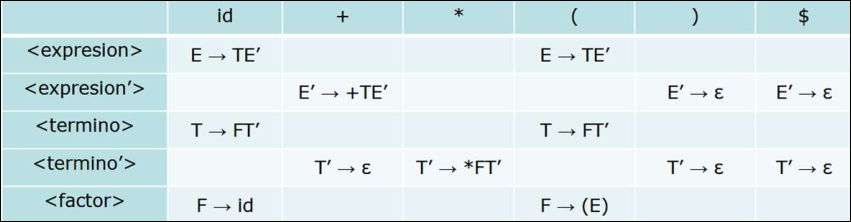
Traducción: Para cada producción:
A → α
se hace esto:
1. Calcula PRIMEROS(α).
2. Para cada terminal a en PRIMEROS(α), coloca A → α en T[A, a].
3. Si ε está en PRIMEROS(α), entonces coloca A → α en T[A, b]
para cada b en SIGUIENTES(A).
Procedimiento de Análisis
Podemos proporcionar un procedimiento de análisis basado en el uso de una tabla de análisis sintáctico para seleccionar la siguiente regla de sustitución y una pila para almacenar los símbolos gramaticales.
El algoritmo de análisis es el siguiente:
- Inicializar la pila con el símbolo
y añadir a continuación y al final de la cadena de entrada - Comparar el símbolo
de la cima de la pila y el siguiente símbolo de la entrada. - Si
aceptar la cadena y salir - Si
extraer el elemento de la pila y avanzar una posición en la cadena de entrada - Si
es un terminal o es un no terminal y está vacía es un error. - Si
es un no terminal y en tenemos extraer de la pila a insertar - Volver al paso 2.
- Si
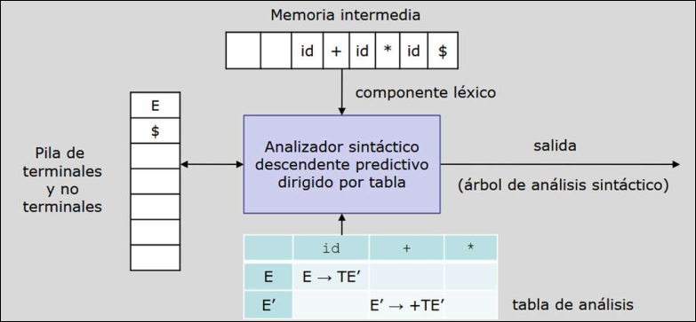
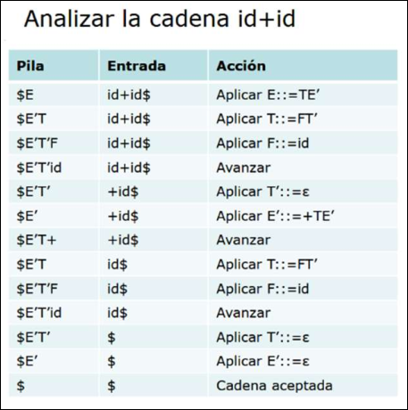
Resumen
Las gramáticas
- Eliminar la recursividad por la izquierda
- Eliminar la ambigüedad
- Factorizar por la izquierda
3.3.3 Gestión de errores en ASD
Pueden darse dos tipos de errores en el ASD:
- En la parte superior de la pila hay un terminal que no se corresponde con el componente léxico actual: el compilador deberá señalar el error, indicando qué es lo que esperaba encontrarse.
- En la parte superior de la pila hay un no terminal, y la celda de la tabla correspondiente al componente léxico actual está vacía: el compilador deberá señalar un error conforme se esperaba uno de los componentes léxicos del conjunto de celdas del no terminal que contienen algún dato.
Al detectar el error el compilador debe continuar el análisis para lo que puede aplicar la técnica de conjuntos de sincronización. Esta sincronización se basa en que, al detectar un error:
- Se entra en un estado de error
- Se continúa analizando la entrada, descartando los componentes léxicos que aparecen hasta encontrar uno que pertenezca al conjunto de sincronización
- Se valora quitar el símbolo de encima de la pila, se abandona el estados de error y se prosigue con el análisis.
La efectividad de este método depende de la elección del conjunto de símbolos de sincronización. Normalmente se utilizan técnicas empíricas, basadas en el estudio de los errores más frecuentes.
-
Para un no terminal
, se suelen incluir en su conjunto de sincronización los símbolos de , ya que, si aparece uno de esos símbolos, es probable que el análisis pueda continuar dando por terminado y quitándolo de la pila. -
En los lenguajes de programación suele haber niveles jerárquicos, como expresión, sentencia, bloque, etc. Por ello, se pueden añadir al conjunto de sincronización de un no terminal de baja jerarquía los símbolos que inician construcciones de nivel superior, para poder recuperar el análisis en un punto más estable.
-
Para un no terminal
, también se pueden añadir los símbolos de a su conjunto de sincronización, ya que indican posibles comienzos válidos de y pueden servir para retomar el análisis. -
Si un no terminal puede generar
, se puede tomar esta producción por omisión, dejando la detección y recuperación del error para símbolos más importantes o de mayor jerarquía. -
Si el error se produce porque no se puede emparejar un terminal, se puede extraer dicho terminal de la pila como si hubiese aparecido en la entrada, emitir un mensaje de error indicando que se esperaba ese símbolo y proseguir con el análisis.
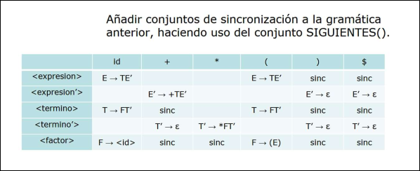
3.4 Análisis Sintáctico Ascendente
El análisis sintáctico ascendente parte de una cadena de entrada formada por una secuencia de componentes léxicos y busca corresponder las partes derechas de las reglas de la gramática. Cuando encuentra una, la sustituye (decimos reduce) por su parte izquierda, y crea un nuevo nodo del árbol sintáctico. Continúa así has llegar a
Puede haber distintas reglas de sustitución con alguna parte derecha común, y reglas que sustituyan por la cadena vacía. El problema es decidir cuándo lo que parece una parte derecha de una regla se puede sustituir por su parte izquierda.
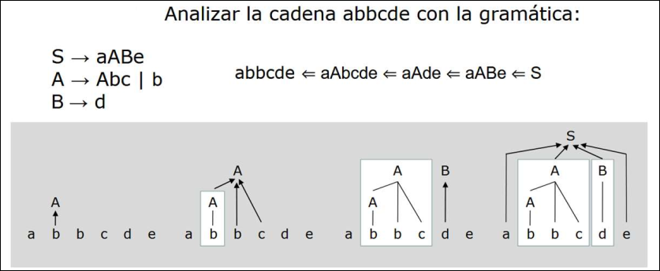
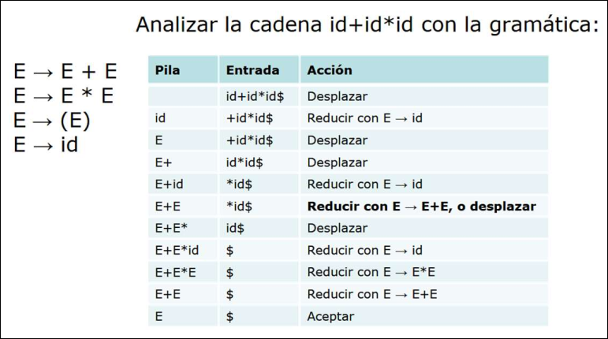
Los algoritmos de análisis sintáctico ascendente utilizan una pila en su análisis y realizan dos operaciones básicas:
- Desplazamiento: lleva el siguiente símbolo de entrada a la cima de la pila
- Reducción: extrae tantos símbolos de la pila como símbolos tiene la parte derecha de la regla de sustitución, por la cual se quiere reducir, y los sustituye por el símbolo no terminal de la parte izquierda de la regla.
3.4.1 Gramáticas LR(k)
En análisis ascendente por desplazamiento-reducción se utilizan gramáticas
(left): la entrada se lee de izquierda a derecha (right): se construyen derivaciones por la derecha en orden inverso : se leen componentes léxicos por anticipado. Se pueden demostrar que, para cada gramática con , hay una gramática equivalente. Por esto, normalmente se trabaja con .
Las gramáticas
- Gramáticas
(simple ): presentan la construcción más sencilla (usaremos esta). - Gramáticas
: permiten describir un rango mayor de gramáticas, pero la construcción es más compleja. - Gramáticas
(look ahead ): suponen un compromiso entre las dos anteriores
3.4.2 Análisis
Utilizaremos un procedimiento basado en el diseño de un AFD, que nos dirá si una entrada pertenece al lenguaje generado por la gramática y cuyos estados son conjuntos de elementos que representan situaciones equivalentes en el análisis de una entrada.
Una función a la que llamaremos ir_a nos permitirá simular las transiciones del autómata para cada uno de los símbolos de la gramática. Para una gramática
Elementos
Un elemento
Para las reglas de sustitución
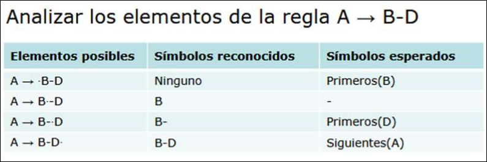
Clausura
La función clausura() se aplica a un conjunto de elementos
- Todo elemento de
se añade a - Si
está en y es una regla de la gramática, entonces añadir a - Aplicar el paso 2 hasta que no se puedan añadir nuevo elementos a la
Si
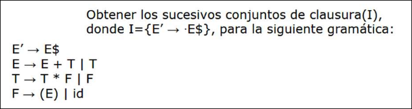
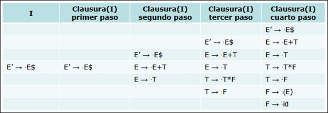
Traducción: La clausura se usa cuando después del punto hay un no terminal.
A → • B - D
Como después del punto está B, el parser se pregunta:¿Cómo puede empezar B? Entonces añade todas las reglas de B con el punto al principio. Si tenemos:
B → x
B → y z
añadiríamos a la clausura:
B → • x
B → • y z
ir_a(I,X)
Desde el conjunto de elementos
, si reconozco el símbolo , ¿a qué nuevo conjunto de elementos paso?
La función
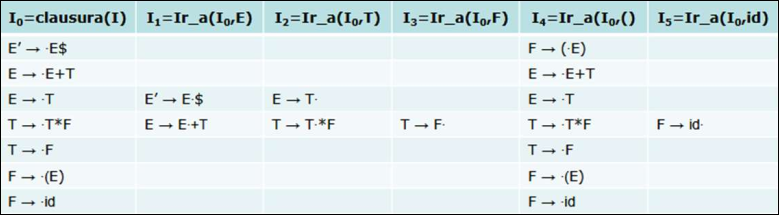
Colección Canónica LR(0)
Llamaos colección canónica
- Crear la gramática aumentada, resultado de añadir artificialmente la regla
- El primer conjunto de elementos es
- Calcular todos los posibles conjuntos resultado de aplicar
para todos los símbolos y se descartan los conjuntos vacíos. - Aplicamos
de nuevo a hasta no obtener nuevos conjuntos.
Si consideramos cada conjunto
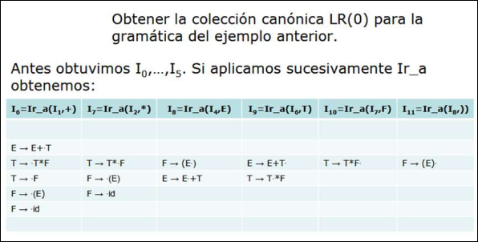
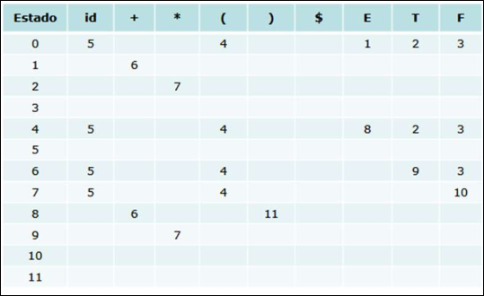
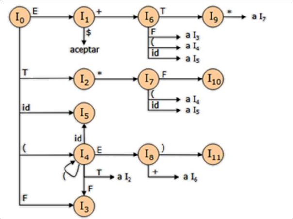
Tabla de acciones
Podemos construir una tabla de acciones que permitirá al analizador sintáctico ascendente decidir entre desplazar y reducir. El procedimiento es el siguiente:
- Construir la colección canónica
- Para los elementos
de la forma , donde , entonces entonces acción desplazar la entrada e ir al estado - Para los elementos de
, de la forma , entonces reducir para cualquier - Si el elemento
está en , entonces aceptar
Las entradas vacías de la tabla de acciones representan estados de error.
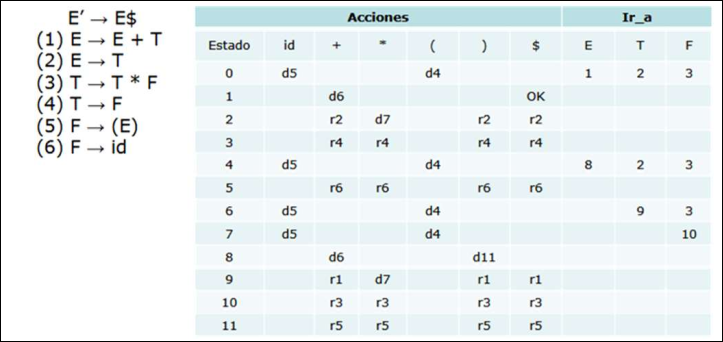
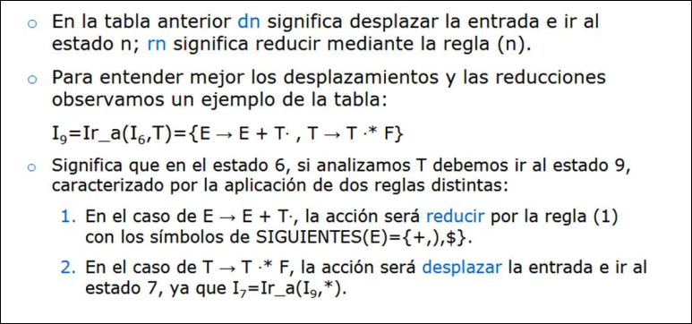
Procedimiento de analisis
Podemos proporcionar un procedimiento de análisis basado en el uso de una tabla de control para seleccionar la siguiente regla de sustitución y una pila para almacenar los símbolos gramaticales.
El algoritmo es el siguiente:
- Inicializar la pila con el estado 0
- Para cada estado de l apila
y símbolo de entrada consultamos la celda . - Si
entonces desplazamos la entrada, vamos al estado y lo introducimos en la cima de la pila - Si
entonces reducimos mediante la regla ( ), de la forma ; para ello si es la longitud de , eliminamos estados de la cima de la pila y a continuación vamos al estado , donde es el estado que ha quedado en la pila - Si
, completamos el análisis - Si
, error e invocamos la gestión de errores
- Si
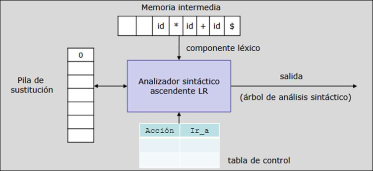
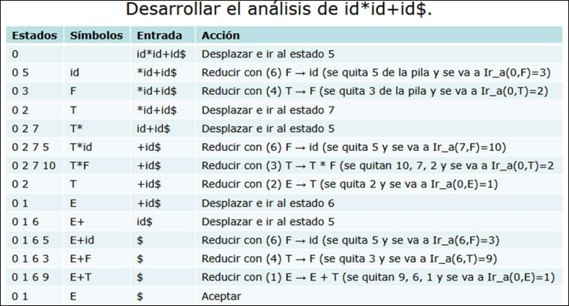
Una gramática es
- Desplazamiento-reducción: sucede cuando en la misma celda aparece una acción de desplazar y una de reducir. Normalmente para poder continuar el análisis se elige una acción por defecto, generalmente la de desplazar
- Reducción-reducción: sucede cuando en la misma celda, la entrada se puede reducir por dos reglas distintas. La solución más razonable es modificar la gramática para que esto no ocurra.
3.4.4 Gestión de Errores en ASA
Los errores sintácticos suceden cuando a partir del estado actual de la cima de la pila no hay ninguna transición definida para el símbolo actual de la entrada. En esta situación el estado de la pila representa el contexto a la izquierda dle error, y el resto de la cadena de entrada, el contexto a la derecha.
La recuperación del error se lleva a cabo modificando la pila y/o cadena de entrada, hasta que el estado y la cadena le permiten al analizador continuar el análisis. Mostraremos dos métodos de gestión de errores:
- Métodos heurísticos: suponen la programación de rutinas específicas para cada celda en la que se produce un error
- Métodos de análisis de transiciones:
- Explorar la pila hacia abajo hasta encontrar un estado
con un para un no terminal - Descartar cero o más símbolos en la entrada hasta encontrar uno que pueda seguir
de acuerdo con la gramática - Mete el estado
en la pila y continuar
- Explorar la pila hacia abajo hasta encontrar un estado